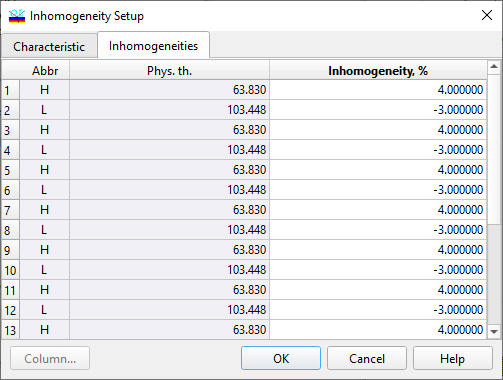

Inhomogeneity/Interlayers
Inhomogeneity/Interlayers
Navigation: OptiLayer Menu Commands > Analysis Menu > Inhomogeneities/Interlayers >
Inhomogeneity/Interlayers
` <inhomogeneity_interlayers_char.html>`__ ` <inhomogeneities_interlayers.html>`__ ` <back_side_interlayers.html>`__
The Inhomogeneities/Interlayers tab of this dialog allows specifying degrees of inhomogeneities for design layers and thicknesses of interlayers for every interface.

The degree of layer inhomogeneity Delta is the percentage ratio of the difference between the layer refractive indices at the upper and lower layer interfaces to the mean refractive index of this layer. Refractive index distribution throughout the layer is assumed to be a linear (linearly increasing or decreasing) index profile. A positive degree of inhomogeneity Delta corresponds to an increasing refractive index profile (that is, the refractive index at the upper interface is higher than that at the lower interface). A negative degree of inhomogeneity Delta corresponds to a decreasing index profile. Homogeneous layers have zero Delta values. Interlayer thicknesses for each interface should be specified in the rightmost column. The refractive index of interlayers is computed automatically as a 50%/50% mixture of surrounding materials (Bruggemann’s formula is used). In order to keep the total thickness of the design constant, thicknesses of interlayers are subtracted from thicknesses of surrounding layers. The “Column…” button allows access to the Column Editor, which can be used for sophisticated editing of values in columns.
The OK button accepts specified values and starts the Inhomogeneities/Interlayers Analysis procedure. Its results are displayed in the Inhomogeneities/Interlayers Evaluation window. The Apply button performs the same operation but without closing the Inhomogeneities/Interlayers Setup window.
See also: